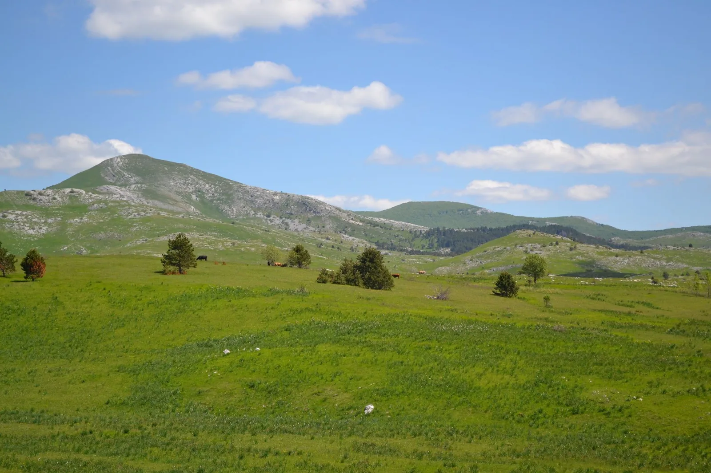

Pseće muke po Glogovu
U rano jutro probudili su nas psi. Oni koji su već bili na Glogovu upoznati su sa situacijom, a one koji nisu, nije mogao pripremiti ni nadasve motivirajući e-mail Ane Bakšić: „Nemojte se uplašiti ogromnih pasa koji će…

U petak 26. 05. u 17h krenusmo u još jedan posjet Glogovu. Ekipu koja je kretala taj dan činili su Ana Bakšić, Domagoj Tomašković iz SKS-a i Gordan Bezjak.
Nakon skupljanja po bespućima Trnja i Trešnjevke, vjerni je Žarko zabrundao u pravcu Karlovca te nas, odlučivši kako mu se neda palit radio, pustio da se u tišini radujemo izletu koji sljedi te međusobno upoznamo. Plan je bio ulazak u Aničin ponor, koji se nalazi u polju ispod Surli, te u potpunosti izraditi njegov nacrt. Drugu ekipu koja je kretala u subotu ujutro 27. 05., i koju su činili Darko Jeras, Tomislav Tomašković i Dragan Skorosavljević, je čekalo rekognosciranje terena oko brda Bat, u cilju pronalaska jame koja se navodno tamo nalazi, te priprema roštilja.
Laganim tempom dosegli smo Glogovo oko 21:30 i napravili kamp u vrtači pored zaselka Cvjetkovići. Zapalila se vatra, poteklo je vino, otvorilo se pivo, a na štap se nabola i pokoja kobasa.
U rano jutro probudili su nas psi. Oni koji su već bili na Glogovu, upoznati su sa situacijom, a one koji nisu nije mogao pripremiti ni nadasve motivirajući e-mail Ane Bakšić: „Nemojte se uplašiti ogromnih pasa koji će nam doć čuvati logor i otimati klopu. Umiljati su“. Psi su tornjaci Bobi, Tigrići a.k.a. Hijene i Medo, te albino terijer kojeg smo nazvali Štaksi, a u ovoj epizodi čoporske Dinastije izostali su Maza i Turčin. Turčin se, kako smo kasnije saznali od pastira, stalno prenemagao na lancu, pa je, nakon što mu se pastir sažalio te ga pustio s lanca, pobjegao sa djecom Tigrićima od života čuvanja stada, u Gračac, u bolji život. Pronašli su ih nakon 14 dana u azilu. Maza je pobjegla negdje se okotit. Nisu je vidjeli već 20 dana. Nakon jutarnje kave i borbe za hranu, krenuli smo u Aničin ponor.
Na tridesetak metara dubine naišli smo na veliko suženje, kojeg su Ana i Domagoj prošli. Spustvši se niz vertikalu od 15 metara i prošavši kroz 30 metara uskog meandra punog vode, došli su do dimnjaka visokog 30 metara, pritom izradivši i nacrt. Nacrt je kompletiran i čekaju se rezultati. Ja sam u međuvremenu izašao iz jame te dočekao drugu ekipu koja je taman došla s ćevapa iz Zvonimira, te smo krenuli u rekognosciranje brda Bat. Pritom smo naišli na poluspilju presjeka 7 metara, koju smo nazvali Bat Kejv. Karakteristike su široki bočni ulaz od cca 5 metara, ostaci ognjišta i urušeni zid koji je napravila ljudska ruka na samom ulazu. Pronašli smo i potencijalnu jamu, koju smo nazvali G točka, čiji je ulaz dubok 2 metra, nakon čega slijedi suženje, a kamen pada još metar i pol. Treba dalje istražiti postoji li perspektiva nakon suženja, iako je ta perspektiva podosta slaba.
Za oba objekta unijeli smo koordinate i poslikali ulaze. Vratili smo se u kamp te svi zajedno počeli peći roštilj i kobasice. Večer su nam pokvarile čoporsko prepucavanje, borbe pasa te adolescentsko nametanje volje problematičnog Bobija. Naime, da se izrazim Domagojevim riječima, Bobi je shvatio kako je „masa mama“, te kao mlad pas od godine i dva mjeseca izazivao je tuče sa svima, najviše sa Medom i malim Štaksijem. Noć je većini prošla relativno mirno, osim Darku koji je bio protjeran sa svojeg ležišta teritorijalnim obilježavanjem, te je dio jutra prespavao u autu. Borbe pasa su se nastavile, pa smo s radošću spakirali svoje stvari te se razdijelili u dvije ekipe u daljnjem rekognosciranju.
Domagoj i ja smo krenuli pronaći jamu koja je bila unesena u topografsku kartu na Osoju iznad sela Glogovo, dok su ostali otišli pronaći jamu Upitnik i ostale objekte iznad sela Točak. Domagoja i mene su pritom pratili Medo i Štaksi, koji su nas navodili na pastirske staze te jednom prilikom protjerali divlje svinje koje su nam bile u blizini.
Objekt koji smo pronašli bila je vrtača dubine oko 15 metara s procjepom na njenom dnu. Pod procjepa je urušen te se nigdje nije pronašao nikakav daljnji kanal, stoga nema nikakvu perspektivu. Psi su se pobrinuli da nas ne rastuži ćorak. Medo je ušao u vrtaču, a Štaksi je čak ušao u procjep lizati mahovinu, bezobzirno što kasnije nije mogao van.
Oduševila nas je njihova srčanost – ludi psi totalno. Druga ekipa je pronašla jamu Upitnik, za koju se isto ispostavilo da je procjep bez perspektive. Nakon rekognosciranja, našli smo se u Zvonimiru, te nakon obilne klope i pive, otišli smo oprati opremu u potok Otuča, u kojem je bilo i kupanja.
Sudjelovali: Ana Bakšić, Gordan Bezjak, Domagoj Tomašković, Dragan Skorosavljević, Tomislav Tomašković, Darko Jeras [gallery ids="754,755,756,757,758,759,760,751" type="rectangular"]